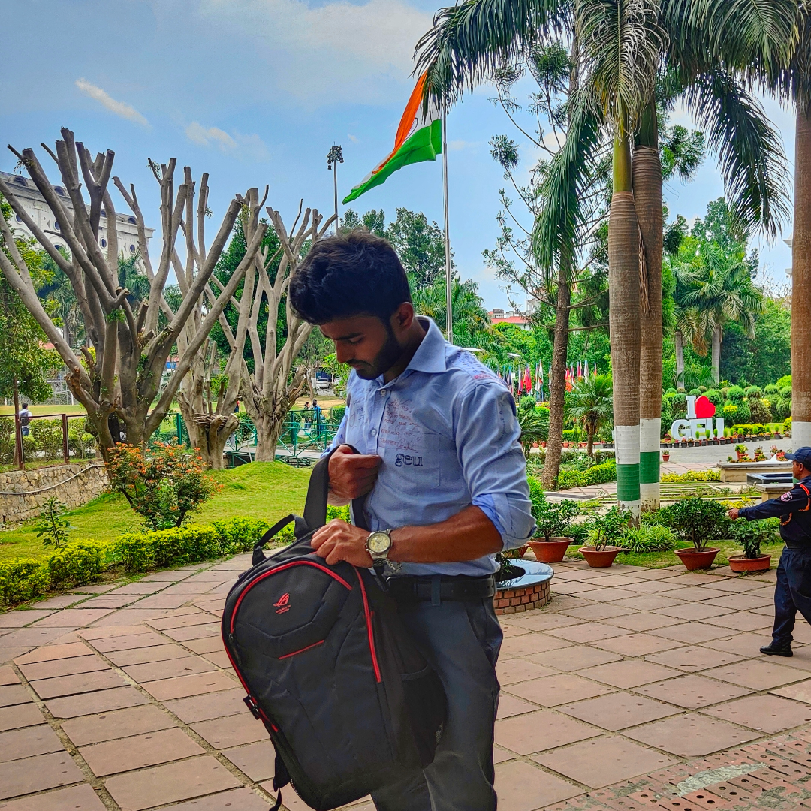

Hi, I am Prince
and I am a passionate

Work Experience
Subject Matter Expert
(Oct, 2021 - March, 2022)
- Expert answerer for the subject Computer Science on Chegg.com asked by students all around the globe.
Web Developer
(Jun, 2022 - Jul, 2022)
- Assisting with the design and development of websites.
- Updating and maintaining existing websites.
- Learning about web development best practices.
- Working under the guidance of a mentor and gaining hands-on experience in a professional development environment.
- Updating and maintaining existing websites.
- Learning about web development best practices.
- Working under the guidance of a mentor and gaining hands-on experience in a professional development environment.
Full Stack Java Developer Trainee
(Aug, 2023 - Present)
SKILLS:
Front-end: HTML, CSS, Bootstrap, JavaScript
Version Control: Git
Back-end: MongoDB
Java: Core Java, Collections, Multithreading, Exceptions, File Handling
Database Management: DBMS, JDBC
Frameworks: Sprint, Spring Boot
Front-end Frameworks: React, Angular
Web Application Development: Full Stack Development (FSD), MEAN Stack, MERN Stack
Front-end: HTML, CSS, Bootstrap, JavaScript
Version Control: Git
Back-end: MongoDB
Java: Core Java, Collections, Multithreading, Exceptions, File Handling
Database Management: DBMS, JDBC
Frameworks: Sprint, Spring Boot
Front-end Frameworks: React, Angular
Web Application Development: Full Stack Development (FSD), MEAN Stack, MERN Stack